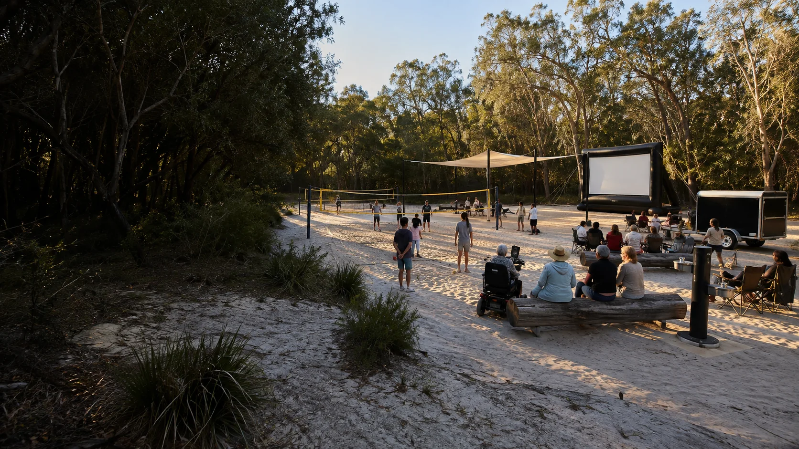
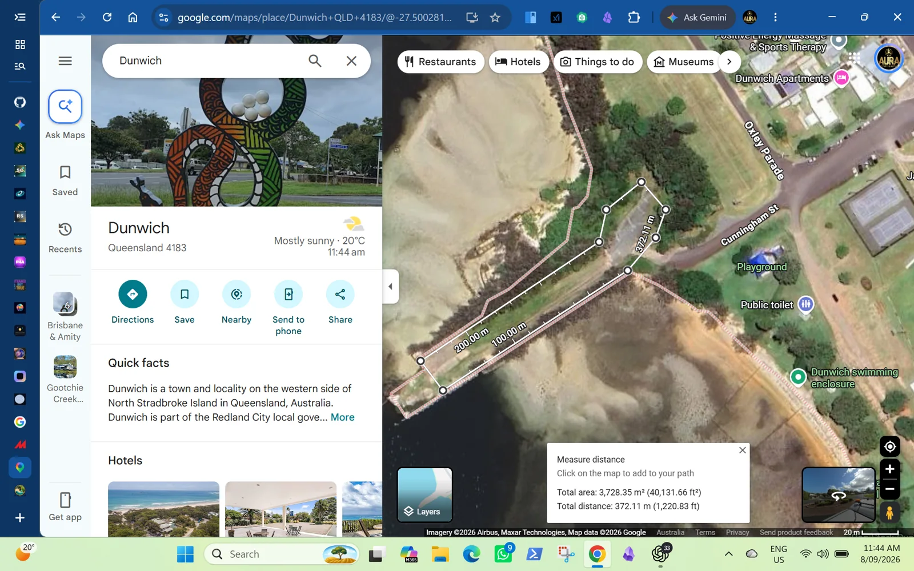

Sand sport and social play
Volleyball, cricket, roundnet, ultimate, family games, youth clinics and gentle movement sessions would share removable equipment.

A site-neutral idea linking adaptable sand sport, outdoor cinema, local screen work and comfortable gathering. The wider location conversation includes Dunwich, Amity and Point Lookout.
The program would be shaped around regular island use, with visitors fitting around local life rather than setting the pace.
Volleyball, cricket, roundnet, ultimate, family games, youth clinics and gentle movement sessions would share removable equipment.
Films, local shorts, music clips, youth media practice, interviews, captioning and community storytelling add another way to participate. Some event nights might also include small markets, food, music or club fundraisers.
Shade, seating, drinking water, toilets, safe surfaces, readable signs, low-glare lighting and quiet periods belong in the practical brief.
Setup, coaching support, filming, sound, small-market help, equipment care and pack-down offer practical experience and possible paid work when resourced.
An early Sandy Sports draft records a 7 metre inflatable screen, speakers and an older large-venue projector. Their present condition and setup needs still require checking.
Removable court gear, shade, seating, sound, power and a compact trailer support small trials without fixing the whole idea to one footprint.
A regular base and smaller sessions in other towns remain different possibilities. Each place would need its own practical checks and local interest.
Condition, charging, cleaning, repairs, storage, transport and return records help portable equipment stay ready.
The recently added Dunwich area and 10 to 12 Ballow Road are separate location leads. Neither has been selected.
Recent local information describes this area as another place where quartz silica sand was loaded during the sand-mining era.
Its history, usable ground, cultural and environmental context, access, tenure, neighbours, services and present condition need their own record.
The original workbench explored this address. The recently supplied Dunwich location lead was not part of that earlier research. Its program ideas remain useful without deciding the location.

Both Dunwich leads need the same checks for usable ground, cultural and environmental context, access, tenure, neighbours, services, maintenance and everyday community use.
The portable approach also leaves room for separate conversations in Dunwich, Amity and Point Lookout. One location does not need to answer every island need.
9 Ballow Road remains a separate public hub proposal.
A trial starts when an appropriate place is offered and the practical responsibilities are clear.
A come-and-try sport day, a screen workshop or a small market and film evening.
Use portable gear, clear access, shade, seats, water and an agreed pack-down.
Note participation, comfort, costs, local roles, neighbour impacts, weather and equipment lessons.
Repeat, adapt, move or stop according to what local participants and the site evidence show.
The existing workbench carries the deeper sport, film, market, youth, older-local, governance and source exploration. Its 10 to 12 Ballow Road focus is an earlier location study, not a decision for this site-neutral concept.